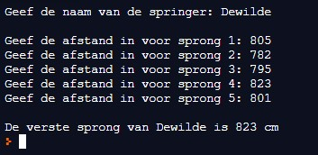

In de discipline verspringen mag een atleet 5 keer springen. Zijn beste sprong telt uiteindelijk. Schrijf nu een programma dat de naam van de atleet vraagt en vervolgens 5 sprongen inleest (in cm). Vervolgens wordt de afstand van de verste sprong getoond.
Hieronder vind je de schermafdruk van een uitvoering van het programma.
